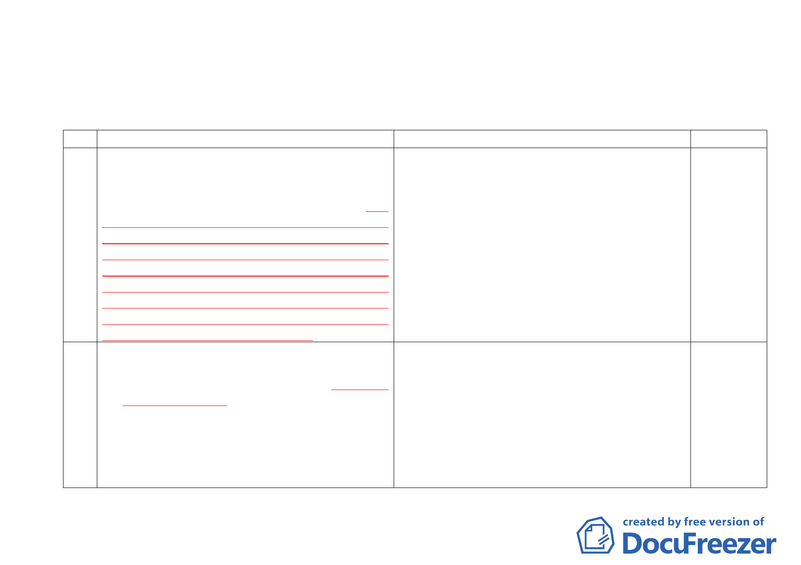

附件一
「變更臺北市市民大道（新生北路至基隆路段）兩側第三種住宅區及道路用地為第三之一種住宅區
（特）、公園用地、第四種住宅區為第四之一種住宅區（特）、停車場用地為公園用地細部計畫暨劃定
都市更新地區計畫案」之都市計畫書修正對照表
編號
一 捌、都市更新
修正計畫
捌、都市更新
公展計畫
說明
補充劃定都
為配合整體發展政策及加速推動本計畫區推動都市
為配合整體發展政策及加速推動本計畫區推動都市 市 更 新 地 區
更新，改善當地環境品質，計畫範圍全區劃定為都市更新 更新，改善當地環境品質，計畫範圍全區劃定為都市更新 面積資料
地區範圍，並得依都市更新條例及其相關規定辦理，劃定 地區範圍，並得依都市更新條例及其相關規定辦理。
第三之一種住宅區（特）都市更新地區面積 13.31 公頃，
第四之一種住宅區（特）都市更新地區面積 4.59 公頃，第
三種住宅區都市更新地區面積 1.02 公頃，第三之一種住宅
區都市更新地區面積 0.25 公頃，第三之二種住宅區都市更
新地區面積 0.80 公頃，第四之一種住宅區都市更新地區面
積 0.28 公頃，第三種商業區（特）都市更新地區面積 0.93
公頃，敦化南北路特定專用區之Ａ區面積 0.96 公頃，敦化
南北路特定專用區之 B 區面積 0.96 公頃。
二 陸、土地使用分區管制
陸、土地使用分區管制
指定合併街
四、為改善本地區內街廓合理規模，以落實再開發效益及 四、為改善本地區內街廓合理規模，以落實再開發效益及 廓 開 發 範 圍
防救災需求，經指定合併街廓開發範圍，以獎勵街廓
防救災需求，經指定合併街廓開發範圍，得經「臺北 屬 選 擇 性 規
合併開發方式辦理，得經「臺北市都市設計及土地使
市都市設計及土地使用開發許可審議委員會」審議通 範，配合補充
用開發許可審議委員會」審議通過，將其街廓間之計
過，將其街廓間之計畫道路以等面積調整移設與周邊 說明，以資明
畫道路以等面積調整移設與周邊相鄰道路合併或作為
相鄰道路合併或作為開放空間使用之公共設施用地。 確。
開放空間使用之公共設施用地。指定合併街廓開發範
指定合併街廓開發範圍內之第三種住宅區，得於合併
圍內之第三種住宅區，得於合併整體開發後，適用本
整體開發後，適用本計畫第三之一種住宅區（特）之
計畫第三之一種住宅區（特）之相關規定辦理。
相關規定辦理。
11